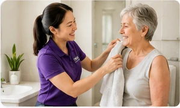
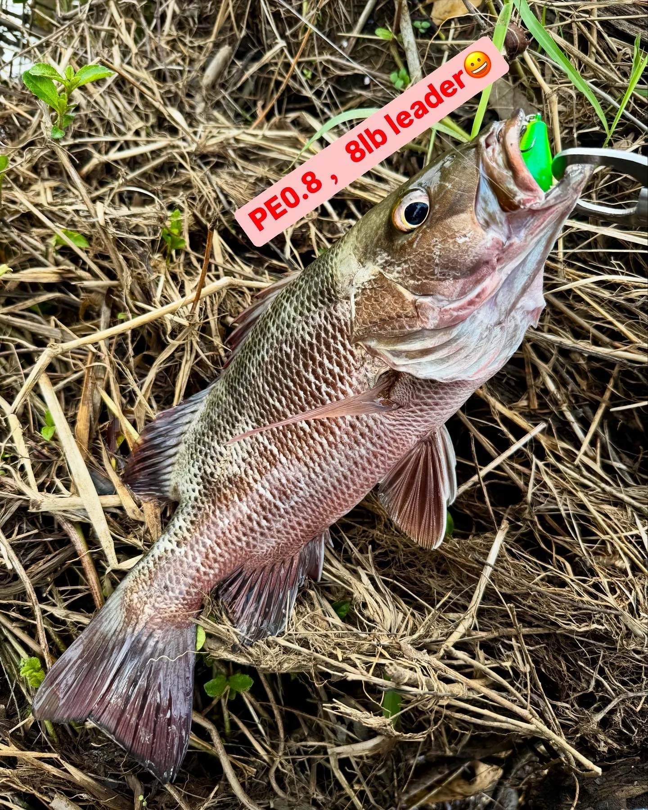

Personal Care
Respectful support with showering, dressing, grooming, hygiene, mobility, transfers and daily routines.
Learn more →Friendly, flexible and person-centred disability support designed around your goals, routines and lifestyle.

Support that is practical, respectful and focused on the life you want to live.

Respectful support with showering, dressing, grooming, hygiene, mobility, transfers and daily routines.
Learn more →Support to enjoy appointments, shopping, cafés, parks, events, hobbies and meaningful social connections.
Learn more →Reliable transport support for appointments, therapy, shopping, education, work and community activities.
Learn more →Practical help with cleaning, laundry, bed linen, meal preparation, shopping and household organisation.
Learn more →Build confidence with cooking, budgeting, shopping, time management, communication and public transport.
Learn more →Enjoy fishing, walking, exercise, creative activities, community events and interests that matter to you.
Learn more →We take time to understand what matters to you. Your preferences, culture, communication style and goals guide every part of your support.
Call, email or send an enquiry.
We discuss your needs and NDIS goals.
We create a personalised plan together.
Arrange your free, no-obligation consultation today.